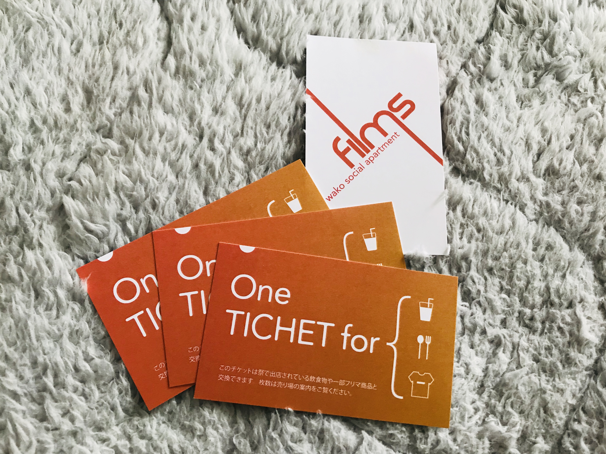
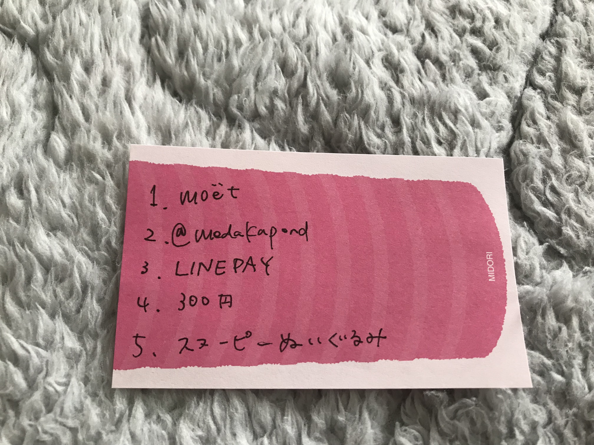
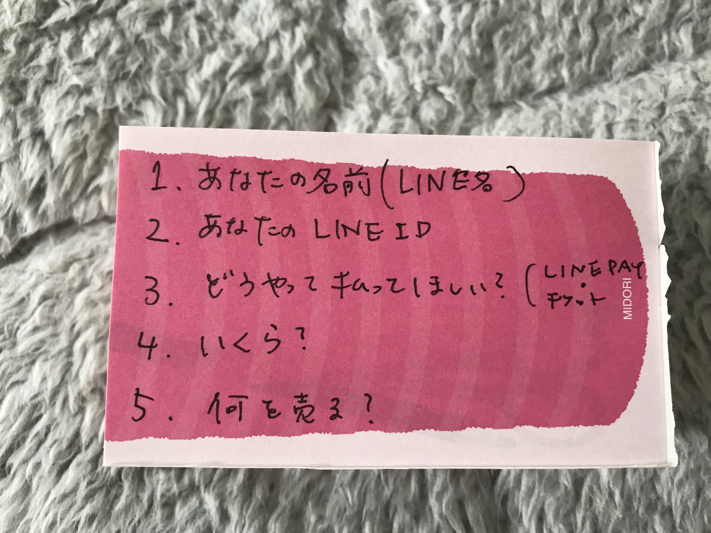

Ticketについて
- 事前決済、当日決済にてお支払いただいた方には受付にて、下記のチケットを4枚お渡しします。

- チケットは当日出店する店のどこでもお使いいただけます。
- チケットがなくなった場合、または18:00以降の参加の方は1枚〜購入いただくことも可能です。(1枚300円)
- チケットはどんな場合も、受付からの受け取りのみです。
フリマについて
- フリーマーケットでは、チケットでの出品とLINE PAYでの出品があります。
- チケットで出品した場合は、売れた分のチケットをスタジオにてお受け取りいただけます。
- 現金のやりとりはご遠慮ください。
LINE PAYでの出品
- フリマ会場担当で決済・現金あづかりを承ることはできません。
- 出品する場合は、下記のいずれかの方法で出品してください。
- ・買取決定時にLINE PAYで支払い（支払いの確認のみ、売り場担当に確認可能です。）
- ・買取決定時に祭チケットの譲渡（決定時にLINE連絡、受付にて受け取れます。）この場合上限は 3枚です
- ・売り場に待機し、直接やり取り
- ・無償提供
値札の書き方

- 値札の書き方の例です。
- ポイントは、下記情報を必ず記入してください。
- １．出品者のLINE名
- ２．出品者のLINE ID
- ３．支払い方法(LINE PAY / 祭チケット)
- ４．値段 / 枚数
- ５．出品物
- これらの情報がないと、出品者の情報がわからず、無事売れたとしても出品者の手元にリターンがなくなってしまう場合があります。
- 下記にイメージでのチートシートも用意しました

そのほかFAQ
- 何時から何時までですか。
- 13:00~22:00です。途中参加、途中抜け可能です。
ただ、事前エントリーをもとに飲食物を用意しているので、時間帯によっては足りない場合があります。
- 料理や飲み物を友達にあげたいのですが。
- 基本、飲食をする場合はご自身でチケットをご購入し、飲食物と交換してください。要らなくなってしまった場合は受付に返すか、譲ることが可能です。
- 飲み物持込可能ですか？
- 共用部で禁止はできないので、もちろん可能です。特に飲み物は、普段あまり買わない少しハイクラスな飲み物等をご用意しているので、値段が割高にはなっております。そのため、普段どおりのものを楽しみたい場合はお好きな飲み物を買ってきていただくほうがリーズナブルと思われます。
- 外部の友達も連れてきていいの？
- もちろんOKです。ただ、他の住民の方のご迷惑にならないよう、一緒に行動をお願いします。
- ゴミはどうすればいい？
- バザー会場付近に特設のゴミ箱を設置しますので、なるべくそちらをご利用ください。
Entry
{kind=link}